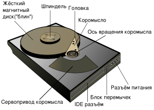
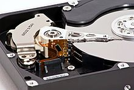
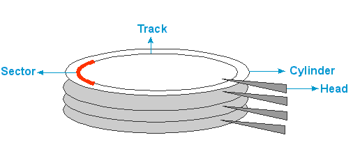
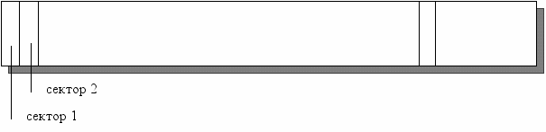
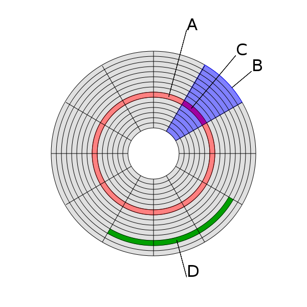
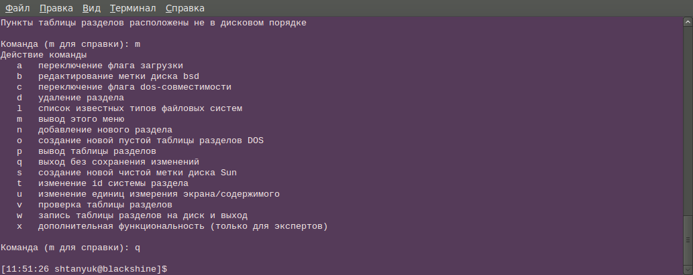
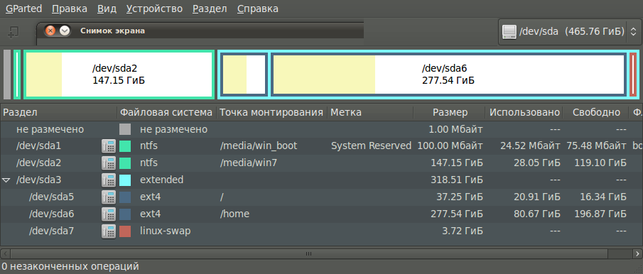
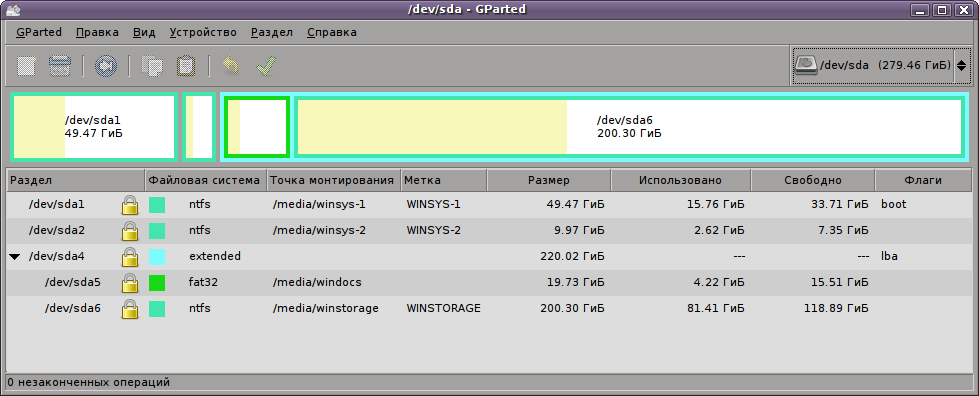
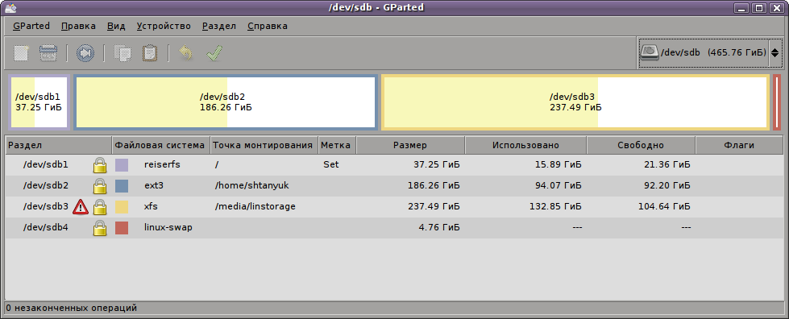

1 Устройство диска
1.1 Физическое устройство
О "прописке" ОС
В настоящее время основной «пропиской» операционных систем служат жесткие диски. Помимо них получают распространения live-дистрибутивы (knoppix linux, live-cd ubuntu), позволяющие загрузиться с CD/DVD. Кроме того, можно встретить рекомендации к созданию загрузочных USB-носителей.
Жесткие диски (HDD, Hard Disk Drive) обладают значительной емкостью, высокой скоростью записи/считывания данных и поэтому ОС рекомендуется устанавливать именно на них.
Устройство жёсткого диска
Рассмотрим физическое устройство жёсткого диска:


Основу устройства составляют магнитные двусторонние диски, закрепленные на общей оси - шпинделе. К каждой поверхности пластины подведена головка записи/чтения. Между поверхностью с магнитным слоем и головкой имеется очень маленький зазор, который, с одной стороны, предохраняет магнитный слой от повреждения, а, с другой, обеспечивает операции намагничивания / размагничивания.
Все головки вдвигаются/выдвигаются на коромысле в область пластин благодаря специальному двигателю
На каждой стороне диска (head) имеются концентрические дорожки (tracks), разбитых на сектора (sectors):

Для того, чтобы адресовать порцию данных не диске необходимо три координаты: номер головки (сторона пластины), цилиндр (дорожка) и сектор (участок дорожки). Эти координаты называются физическими.
Сектора
Размер сектора традиционно равен 512 байт
Компания Western Digital уже начала использовать новую технологию форматирования, названой Advanced Format, и выпустил серию накопителей, использующих новую технологию (WD Green). В этих дисках размер сектора равен 4096 Бт.
Буферизация
Данные считываются и записываются только секторами. Для эффективной работы с диском операционная система выполняет буферизацию, то есть промежуточное накопление при операциях записи и чтения. Кроме того, имеет место чередование секторов для увеличения скорости чтения/записи.
Способы физической адресации
Существует 2 основных способа адресации секторов на диске:
- CHS (цилиндр-головка-сектор);
- LBA (линейная адресация блоков);
CHS относится к физической адресацией, LBA - к логической. Связь между ними выражается формулой:
LBA = [ (Cylinder * no of heads + heads) * sectors/track ] + (Sector-1)
1.2 Дисковые интерфейсы
В настоящее время используется целый ряд дисковых интерфейсов:
- PATA(IDE) - простой и дешёвый интерфейс, обладающий средней скоростью работы. Использует шлейф в виде широкой и достаточно короткой ленты
- SATA - наследник IDE, поддерживающий более высокие скорости обмена данными; применяет кабели большей длины и значительно уже
- SCSI - широко распространённый в мире серверов и рабочих станций интерфейс, знаменитый высокой скоростью обмена данными с диском
- USB - интерфейс для подключений внешних дисков.
Что лучше: SCSI или IDE?
Одно из преимуществ SCSI-дисков - наличие встроенного процессора в контроллере, что снимает значительную часть нагрузки с ЦП ЭВМ. Поэтому, средняя рабочая производительность их выше, чем у IDE.
1.3 Логическая организация
Логическая карта
Работать с физическими координатами не очень удобно (3-D модель). Поэтому от трехмерной модели переходят к одномерной, в которой содержимое диска хранится в секторах, расположенных и пронумерованных последовательно.

Аналогично физическому сектору было введено понятие кластера или блока, который представляет собой совокупность из нескольких секторов.
Структура диска:
- (A) дорожка
- (B) геометрический сектор
- (C) сектор дорожки
- (D) кластер
Как правило, кластер - это наименьшее место на диске, которое может быть выделено для хранения файла.
Разделы
Для того чтобы можно было загрузить с магнитного диска операционную систему, а уже с ее помощью организовать работу с файлами, были приняты специальные системные соглашения о структуре диска. Хранение данных на магнитном диске можно организовать различными способами. Можно поделить все дисковое про странство на несколько частей — разделов (partitions), а можно его и не делить.
Деление НЖМД на разделы позволяет организовать на одном физическом устройстве несколько логических; в этом случае говорят о логических дисках. Следует, однако, заметить, что не во всех операционных системах используется понятие логического диска. Так, UNIX-системы не имеют логических дисков.
Разделение всего дискового пространства на разделы полезно по нескольким соображениям. Во-первых, это структурирует хранение данных. Например, выделение отдельного раздела под операционную систему и программное обеспечение и другого раздела под данные пользователей позволяет отделить последние от системных файлов и не только повысить надежность системы, но и сделать более удобным ее обслуживание. Во-вторых, на каждом разделе может быть организована своя файловая система, что иногда бывает необходимо. Например, при установке операционной системы Linux нужно иметь не менее двух разделов, поскольку файл подкачки (страничный файл) должен располагаться в отдельном разделе. Наконец, в ряде случаев на компьютере может потребоваться установка более одной операционной системы.
Преимущества разделов
Выделение на одном жёстком диске нескольких разделов даёт следующие преимущества:
- на одном физическом жёстком диске можно хранить информацию в разных файловых системах, или в одинаковых файловых системах, но с разным размером кластера (например, выгодно хранить файлы большого размера — например, видео — отдельно от маленьких, и задавать больший размер кластера для хранилища больших файлов);
- можно отделить информацию пользователя от файлов операционной системы, отделить программы от данных;
- на одном жёстком диске можно установить несколько операционных систем;
- манипуляции с одной файловой системой не сказываются на других файловых системах.
- уменьшение влияния фрагментации, т.к. при разделении жесткого диска на несколько разделов каждый файл может находиться только в пределах одного раздела.
2 Разделы и системные области
2.1 Разделы и программы
Классификация разделов
Разделы бывают:
- Первичные - основной тип разделов, используется для установки ОС
- Расширенные - разделы, используемые в качестве контейнеров для логических разделов
- Логические - разделы (в основном для данных), размещаемые в расширенном разделе
Для установки ОС необходимо иметь на диске хотя бы один первичный раздел.
Для установки ОС может понадобиться более одного раздела.
Программы для работы с разделами
Существует много программ для управления разделами. Среди них можно выделить простейшие:
- fdisk, входящей в состав ОС семейства Microsoft
- fdisk, входящий в состав семейства Unix и FreeBSD
Эти утилиты консольные и не обладают возможностями редактирования разделов без уничтожения существующих данных
Программы для управления разделами с GUI и без уничтожения данных:
- Partition Magic
- Acronis Disk Director
- GParted
Главное меню программы fdisk в ubuntu linux

Интерфейс программы GParted в ubuntu linux

2.2 Главная загрузочная запись (MBR)
Содержимое первого сектора
В первом секторе жёсткого диска находится важнейшая область, которая называется MBR (Master Boot Record) - Главная загрузочная запись. Размер MBR - 512 байт.
MBR состоит из двух элементов:
- Внесистемного загрузчика. Размер: 446 Бт.
- Таблицы разделов. Размер: 64 Бт.
Внесистемный загрузчик получает управление при включении ПК и далее должен загрузить и передать управление системному загрузчику (особенному для каждой ОС).
Таблица разделов хранит информацию о первичных и расширенных разделах на диске
Структура MBR
| Смещение | Длина | Описание |
| 000h | 446 | Код загрузчика |
| 1BEh | 64 | Таблица разделов |
| 16 | Раздел 1 | |
| 1CEh | 16 | Раздел 2 |
| 1DEh | 16 | Раздел 3 |
| 1EEh | 16 | Раздел 4 |
| 1FEh | 2 | Подпись 55h AAh |
Из этой структуры видно, что таблица разделов может хранить только записи о 4 разделах
Структура записи в таблице разделов
| Смещение | Длина | Описание |
| 00h | 1 | Признак активности раздела |
| 01h | 1 | Начало раздела — головка |
| 02h | 1 | Начало раздела — сектор (биты 0—5), дорожка (биты 6, 7) |
| 03h | 1 | Начало раздела — дорожка (старшие биты 8, 9 хранятся в байте номера сектора) |
| 04h | 1 | Код типа раздела |
| 05h | 1 | Конец раздела — головка |
| 06h | 1 | Конец раздела — сектор (биты 0—5), дорожка (биты 6, 7) |
| 07h | 1 | Конец раздела — дорожка (старшие биты 8, 9 хранятся в байте номера сектора) |
| 08h | 4 | Смещение первого сектора |
| 0Ch | 4 | Количество секторов раздела |
Первым байтом в элементе таблицы разделов идет флаг активности раздела (0 - не активен, 80h - активен). Он позволяет определить, является ли раздел загрузочным. В результате процесс загрузки ОС осуществляется путем загрузки первого сектора с активного раздела и передаче управления на программу, расположенную в этом разделе.
За флагом активности следует байт номера головки, с которой начинается раздел. За ним следуют два байта, означающие соответственно номер сектора и номер цилиндра загрузочного сектора. За ним следует кодовый идентификатор, указывающий на принадлежность раздела к той или иной ОС. За кодовым идентификатором располагается байт с номером головки конца раздела, затем два байта с номерами сектора и цилиндра последнего сектора раздела. Четыре байта занимают младшее и \tetxbf{старшее} слова относительного номера начального сектора и еще четыре байта отводится под младшее и старшее слова размера раздела в секторах. Последние два байта MBR имеют значение 55AAh.
Значение таблицы разделов
Таблица разделов является важнейшей структурой данных на HDD. Если она повреждена, то невозможно не только загрузить систему, но и обратиться к данным на разделе.
2.3 Работа с расширенными разделами
Расширенные разделы
Расширенный раздел (который должен быть один на одном диске) может быть разделен на несколько логических разделов.
В случае, если используется расширенный раздел, то координаты начала раздела в таблице указывают на EBR (Extended Boot Record) - расширенную загрузочную запись, структура которой приведена ниже
| Смещение | Длина | Описание |
| 1BEh | 16 | Указатель на раздел |
| 1CEh | 16 | Указатель на следующий EBR |
| 1FEh | 2 | Сигнатура (55h AAh) |
Первый элемент расширенной таблицы разделов для первого логического устройства указывает на его загрузочный сектор, второй элемент — на EBR следующего логического устройства. Если следующего логического устройства не существует, то и второй элемент не используется — он содержит набор нулей. Третий и четвертый элементы расширенной таблицы разделов не используются.
Таким образом, EBR логических дисков связываются между собой в цепочку, которая позволяет создать в одном расширенном разделе несколько логических разделов, у каждого из которых будет свой EBR и загрузочный сектор.
2.4 Загрузочные сектора
Загрузочный сектор (Boot Sector), расположенный в секторе 1 каждого первичного и логического разделов диска, является структурой, обеспечивающей загрузку ОС. В этом секторе содержатся исполняемый код и данные, которые требует этот код, включая информацию о файловой системе, используемой на данном разделе. Загрузочный сектор создается при форматировании раздела. В конце загрузочного сектора размещается двухбайтовая структура, называемая маркером конца сектора. Эта структура всегда содержит значение 0x55AA.
На компьютерах, работающих под управлением Windows NT,XP,.., загрузочный сектор активного раздела загружается в память и вызывает загрузчик операционной системы — NTLDR, который выполняет все необходимые действия по загрузке Windows.
2.5 Именование разделов
Названия разделов в Windows
В операционной системе Windows диски именуются латинскими буквами и двоеточиями: C:, D:,
Обычно имя C: присваивалось системному (первичному) разделу, а остальные имена - другим первичным и логическим разделам.
Традиционно (в старых) версиях Windows, именование разделов происходило при загрузке системы в следующем порядке: первичные активные, затем первичные неактивные, затем логические. Теперь имена можно связывать с разделами статически.
Названия разделов в Linux
В операционной системе Linux используется другой подход. Диски называются по имени и типу устройств:
IDE-диски - hd
SATA-диски – sd
Первый по счету жесткий диск называется a, второй b и т.д.
Наконец, первичные разделы нумеруются цифрами 1-4, логические >4. Таким образом, полное имя раздела выглядит так:
sda2 – второй первичный раздел на первом жестком SATA-диске.
hdc5 – первый логический раздел в расширенном разделе третьего IDE-диска.
Приведем пример карты двух жестких дисков, установленных на компьютере при установленных двух системах Windows XP и Ubuntu Linux 7.10
 3 Этапы загрузки ОС
Загрузка ОС
Опишем шаги, выполняемые при загрузке ОС непосредственно до передачи управления системному загрузчику
- BIOS проводит начальную инициализацию оборудования;
- BIOS определяет, с какого устройства производить дальнейшую загрузку: дискета, флеш-накопитель, жёсткий диск и т. д. (выбор устройства зависит от версии и от настроек BIOS);
- BIOS считывает один сектор (512 байт), который находится по адресу: «цилиндр 0, головка 0, сектор 1», и помещает его в область памяти по адресу 0000:7c00;
- BIOS проверяет, что этот сектор оканчивается сигнатурой 55ААh;
- BIOS передаёт управление по адресу 0000:7c00 (то есть сектору MBR)
- MBR копирует себя с адреса 0000:7c00 на адрес 0000:0600 (освобождая место для будущей загрузки уже собственно загрузчика ОС);
- MBR просматривает по очереди все записи о разделах и ищет первую запись об «активном» разделе (то есть ищет раздел, отмеченный как 80h).
- В случае успеха (раздел, помеченный как 80h — найден) MBR запоминает номер этого раздела.
- Если просмотрены все 4 записи и не найден раздел, помеченный как 80h, то вызывается INT 18h. Это возвращает управление обратно в BIOS, что может приводить либо к загрузке BASIC, либо к повторной попытке загрузить систему с диска, либо к перезагрузке компьютера — в зависимости от версии и реализации BIOS.
- MBR просматривает все оставшиеся записи и проверяет, что это единственный активный раздел (что больше разделов, помеченных 80h, на данном физическом диске не существует). Если находятся другие разделы, помеченные 80h, то MBR выводит сообщение об ошибке (обычно это что-то типа «Invalid partition table»), после чего система зависает в бесконечном цикле, из которого можно выйти только перезагрузкой компьютера.
- MBR проверяет, что в данном поле для всех 4-х разделов нет иных значений, кроме «00h» и «80h». Если находятся разделы, помеченные значением, отличным от 00h или 80h, то MBR выводит сообщение об ошибке («Invalid partition table»), система зависает, требуется перезагрузка компьютера.
- MBR считывает первый сектор логического диска, помеченного как «загрузочный» и помещает этот сектор по адресу 0000:7c00
- MBR проверяет, что данный сектор заканчивается сигнатурой 55ААh. Если этой сигнатуры в этом месте нет, то выводится сообщение «Missing operating system» и компьютер подвисает, требуется перезагрузка;
- MBR передает управление по адресу 0000:7c00 (то есть загрузочному сектору выбранного логического диска)
Далее предполагается, что в загрузочном секторе находится код загрузчика, который и производит непосредственную загрузку ОС.
Вопросы для самоконтроля
- Что находится на каждой стороне диска?
- Какие координаты мы называем физическими?
- Чему равен размер одного сектора?
- Как считываются и записываются данные на диски?
- Какие основные способы адресации секторов на диске существуют?
- Какой интерфейс лучше: SCSI или IDE?
- Что представляет собой логическая организация диска?
- Что такое кластер?
- Как кластер связан с файлом?
- Почему выгодно разбивать диск на разделы?
- Какими бывают разделы?
- Какие существуют программы для работы с разделами?
- Где находится MBR?
- Из чего состоит MBR?
- Для чего нужен внесистемный загрузчик?
- Для чего нужна таблица разделов?
- Что можно cказать о структуре MBR?
- Что происходит при повреждении таблицы разделов?
- Как организуется связь между логическими дисками в расширенном разделе?
- Что такое EBR?
- Как строится цепочка EBR?
- Что такое загрузочный сектор?
- Как происходит именование разделов в Windows?
- Что происходит на ранних этапах загрузки ОС?
- Когда происходит передача управления от BIOS к внесистемному загрузчику?
- Что происходит, если загрузочный раздел найти не удалось?
- Как определяется загрузочный раздел?
- Как происходит передача управления системному загрузчику?
- Из каких этапов складывается процесс загрузки?
© 2012 Штанюк А.А.